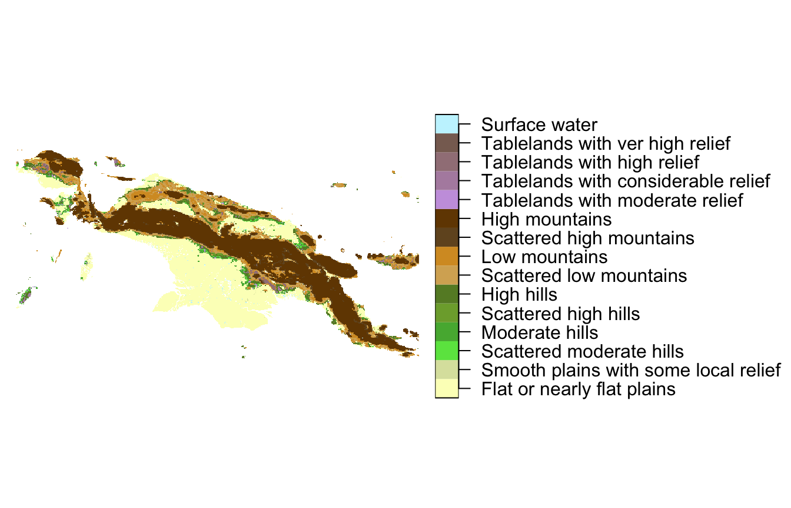
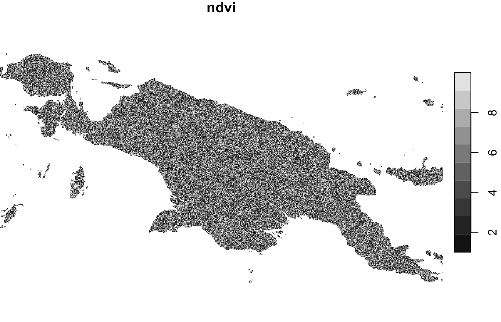

Types of spatial patterns’ signatures
Jakub Nowosad
2020-06-25
Source:vignettes/articles/v2_signatures.Rmd
v2_signatures.RmdThe fundamental element of the pattern-based spatial analysis is a numerical describtion of spatial patterns (so-called signature). This vignette shows how to derive spatial signatures using the lsp_signature() function on example datasets. Let’s start by attaching neccesary packages:
library(motif) library(stars) #> Loading required package: abind #> Loading required package: sf #> Linking to GEOS 3.8.1, GDAL 3.1.0, PROJ 7.0.1 library(sf)
For this vignette, we use several spatial objects. The first one is a "raster/landcover2015.tif" file.
landcover = read_stars(system.file("raster/landcover2015.tif", package = "motif"))
This file contains a land cover data for New Guinea, with seven possible categories: (1) agriculture, (2) forest, (3) grassland, (5) settlement, (6) shrubland, (7) sparse vegetation, and (9) water.
landcover = droplevels(landcover) plot(landcover, key.pos = 4, key.width = lcm(5), main = NULL)

The second one is a "raster/landform.tif" file.
landform = read_stars(system.file("raster/landform.tif", package = "motif"))
It has fourteen landform categories (plus surface water) for the same area.
landform = droplevels(landform) plot(landform, key.pos = 4, key.width = lcm(8), main = NULL)

The third example object is random_ndvi.
set.seed(222) random_ndvi = landcover random_ndvi$ndvi = runif(length(random_ndvi[[1]]), min = 1, max = 10) random_ndvi$ndvi[is.na(random_ndvi$landcover2015.tif)] = NA random_ndvi$landcover2015.tif = NULL
It is an artificial dataset representing numerical weights for each cell for the same area as the datasets above.
plot(random_ndvi)

A co-occurrence matrix ("coma") representation - one layer
The first type of signature is a co-occurrence matrix ("coma"). It requires just one layer (one attribute in a stars object).
coma_output = lsp_signature(landcover, type = "coma", window = 100) coma_output #> # A tibble: 1,084 x 3 #> id na_prop signature #> * <int> <dbl> <list> #> 1 5 0.357 <int[,7] [7 × 7]> #> 2 6 0.0398 <int[,7] [7 × 7]> #> 3 7 0.114 <int[,7] [7 × 7]> #> 4 8 0.465 <int[,7] [7 × 7]> #> 5 9 0.884 <int[,7] [7 × 7]> #> 6 76 0.645 <int[,7] [7 × 7]> #> 7 77 0.480 <int[,7] [7 × 7]> #> 8 78 0.164 <int[,7] [7 × 7]> #> 9 79 0 <int[,7] [7 × 7]> #> 10 80 0 <int[,7] [7 × 7]> #> # … with 1,074 more rows
The output is an object of class lsp with three columns:
-
id- an id of each window (area) -
na_prop- share (0-1) ofNAcells for each window -
signature- a list-column containing with calculated signatures
We can see a signature for selected local landscape extracting it from the signature column:
coma_output$signature[[1]] #> 1 2 3 4 5 6 7 #> 1 0 5 0 2 0 0 0 #> 2 5 24258 0 7 0 0 114 #> 3 0 0 0 0 0 0 0 #> 4 2 7 0 4 0 0 0 #> 5 0 0 0 0 0 0 0 #> 6 0 0 0 0 0 0 0 #> 7 0 114 0 0 0 0 822
Co-occurrence vector ("cove") is rearrangement of a co-occurrence matrix into one-dimensional object:
cove_output = lsp_signature(landcover, type = "cove", window = 100) cove_output #> # A tibble: 1,084 x 3 #> id na_prop signature #> * <int> <dbl> <list> #> 1 5 0.357 <dbl[,49] [1 × 49]> #> 2 6 0.0398 <dbl[,49] [1 × 49]> #> 3 7 0.114 <dbl[,49] [1 × 49]> #> 4 8 0.465 <dbl[,49] [1 × 49]> #> 5 9 0.884 <dbl[,49] [1 × 49]> #> 6 76 0.645 <dbl[,49] [1 × 49]> #> 7 77 0.480 <dbl[,49] [1 × 49]> #> 8 78 0.164 <dbl[,49] [1 × 49]> #> 9 79 0 <dbl[,49] [1 × 49]> #> 10 80 0 <dbl[,49] [1 × 49]> #> # … with 1,074 more rows
This representation can be used to compare different local landscapes.
Learn more about these representations at https://nowosad.github.io/comat/articles/coma.html.
A weighted co-occurrence matrix (wecoma) representation - two layers
The next type of signature is a weighted co-occurrence matrix ("wecoma"). It requires two layers - a stars object with two attributes. The first one is a categorical raster data, while the second one is a continuous raster data containing weights.
wecoma_output = lsp_signature(c(landcover, random_ndvi), type = "wecoma", window = 100) wecoma_output #> # A tibble: 1,084 x 3 #> id na_prop signature #> * <int> <dbl> <list> #> 1 5 0.357 <dbl[,7] [7 × 7]> #> 2 6 0.0398 <dbl[,7] [7 × 7]> #> 3 7 0.114 <dbl[,7] [7 × 7]> #> 4 8 0.465 <dbl[,7] [7 × 7]> #> 5 9 0.884 <dbl[,7] [7 × 7]> #> 6 76 0.645 <dbl[,7] [7 × 7]> #> 7 77 0.480 <dbl[,7] [7 × 7]> #> 8 78 0.164 <dbl[,7] [7 × 7]> #> 9 79 0 <dbl[,7] [7 × 7]> #> 10 80 0 <dbl[,7] [7 × 7]> #> # … with 1,074 more rows
Weighted co-occurrence vector ("wecove") is rearrangement of a weighted co-occurrence matrix into one-dimensional object:
wecove_output = lsp_signature(c(landcover, random_ndvi), type = "wecove", window = 100) wecove_output #> # A tibble: 1,084 x 3 #> id na_prop signature #> * <int> <dbl> <list> #> 1 5 0.357 <dbl[,49] [1 × 49]> #> 2 6 0.0398 <dbl[,49] [1 × 49]> #> 3 7 0.114 <dbl[,49] [1 × 49]> #> 4 8 0.465 <dbl[,49] [1 × 49]> #> 5 9 0.884 <dbl[,49] [1 × 49]> #> 6 76 0.645 <dbl[,49] [1 × 49]> #> 7 77 0.480 <dbl[,49] [1 × 49]> #> 8 78 0.164 <dbl[,49] [1 × 49]> #> 9 79 0 <dbl[,49] [1 × 49]> #> 10 80 0 <dbl[,49] [1 × 49]> #> # … with 1,074 more rows
Learn more about these representations at https://nowosad.github.io/comat/articles/wecoma.html.
An integrated co-occurrence matrix (wecoma) representation - two or more layers
The next type of signature is an integrated co-occurrence matrix (incoma). It requires two or more layers - a stars object with two or more attributes. All layers must be categorical raster data.
incoma_output = lsp_signature(c(landcover, landform), type = "incoma", window = 100)
Integrated co-occurrence vector ("incove") is rearrangement of an integrated co-occurrence matrix into one-dimensional object:
incove_output = lsp_signature(c(landcover, landform), type = "incove", window = 100)
Learn more about these representations at https://nowosad.github.io/comat/articles/incoma.html
A composition representation ("composition") - one layer
A composition signature describes proportions of categories in a local landscape. It requires one layer (a stars object with one attribute).
composition_output = lsp_signature(landcover, type = "composition", window = 100) composition_output #> # A tibble: 1,084 x 3 #> id na_prop signature #> * <int> <dbl> <list> #> 1 5 0.357 <dbl[,7] [1 × 7]> #> 2 6 0.0398 <dbl[,7] [1 × 7]> #> 3 7 0.114 <dbl[,7] [1 × 7]> #> 4 8 0.465 <dbl[,7] [1 × 7]> #> 5 9 0.884 <dbl[,7] [1 × 7]> #> 6 76 0.645 <dbl[,7] [1 × 7]> #> 7 77 0.480 <dbl[,7] [1 × 7]> #> 8 78 0.164 <dbl[,7] [1 × 7]> #> 9 79 0 <dbl[,7] [1 × 7]> #> 10 80 0 <dbl[,7] [1 × 7]> #> # … with 1,074 more rows
By default, it is normalized to sum to 1:
composition_output$signature[[1]] #> 1 2 3 4 5 6 7 #> [1,] 0.0003110904 0.9581583 0 0.0007777259 0 0 0.04075284
To get an actual number of cells of each category, the normalization should be set to "none":
composition_output2 = lsp_signature(landcover, type = "composition", window = 100, normalization = "none") composition_output2$signature[[1]] #> 1 2 3 4 5 6 7 #> [1,] 2 6160 0 5 0 0 262
User-defined functions - one or more layers
The motif package also allows calculating signature based on a user-defined function. This function should accept only one argument, which is a list containing one or more matrices. For example my_fun() below counts how many non-NA cells exist in each local landscape.
Importantly, we need to set normalization = "none" to prevent the normalization of the output.
my_fun_output = lsp_signature(landcover, type = my_fun, window = 100, normalization = "none") my_fun_output #> # A tibble: 1,084 x 3 #> id na_prop signature #> * <int> <dbl> <list> #> 1 5 0.357 <int [1]> #> 2 6 0.0398 <int [1]> #> 3 7 0.114 <int [1]> #> 4 8 0.465 <int [1]> #> 5 9 0.884 <int [1]> #> 6 76 0.645 <int [1]> #> 7 77 0.480 <int [1]> #> 8 78 0.164 <int [1]> #> 9 79 0 <int [1]> #> 10 80 0 <int [1]> #> # … with 1,074 more rows
We can see that in the first local landscape we have 6429 non-NA cells.
my_fun_output$signature[[1]] #> [1] 6429